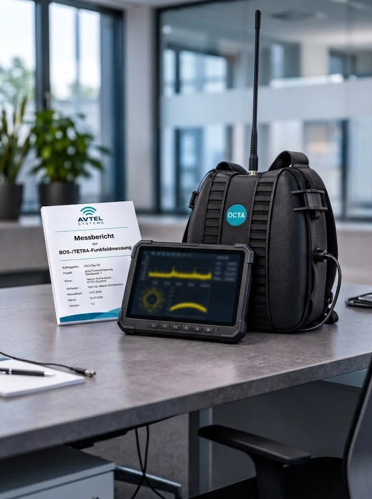
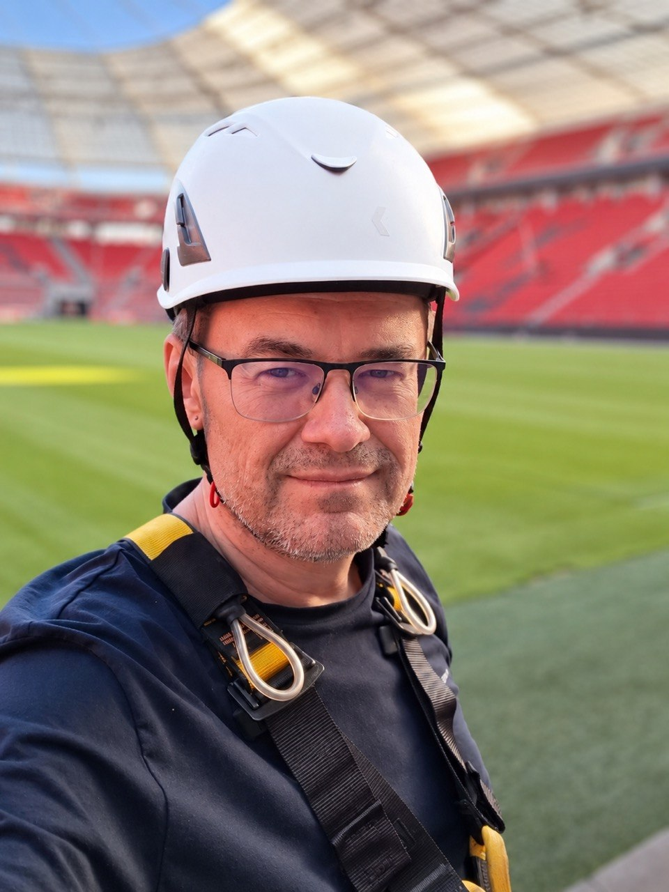

Ausgewählte Projekte
Selected projects
Beispiele aus der praktischen Arbeit im Bereich BOS-Gebäudefunk und Funkfeldmessungen.
Examples from practical work in the field of BOS in-building radio and radio field measurements.

Im Auftrag der ZECH Bau wurden Erforderlichkeits- und Funkfeldmessungen im TMO- und DMO-Betrieb über sechs Geschosse durchgeführt.
Radio field measurement to assess BOS coverage, TMO measurement in the TETRA band 380–400 MHz.
Insgesamt wurden rund 300 Messpunkte dokumentiert und ausgewertet. Die Ergebnisse wurden in einem technischen Messbericht gemäß DIN 14024 zusammengefasst.
A total of approximately 300 measurement points were documented and evaluated. The results were compiled in a technical measurement report in accordance with DIN 14024.

Im Rahmen eines Mobilfunkprojekts in einem Stadion in Leverkusen wurden DTF- und Return-Loss-Messungen an Antennen- und HF-Kabelsystemen mit dem Rohde & Schwarz ZVH4 Cable & Antenna Analyzer durchgeführt.
As part of a mobile network project at a stadium in Leverkusen, DTF and Return Loss measurements were carried out on antenna and RF cable systems using the Rohde & Schwarz ZVH4 Cable & Antenna Analyzer.
Während der Messungen wurden Fehler in der HF-Kabelinfrastruktur lokalisiert und behoben. Anschließend erfolgten Kontrollmessungen zur Überprüfung der betroffenen Kabelstrecken.
During the measurements, faults in the RF cable infrastructure were identified and rectified. Follow-up measurements were then performed to verify the affected cable runs.
Die Messergebnisse dienten als Grundlage für die Erstellung des abschließenden Messberichts.
The measurement results served as the basis for preparing the final measurement report.

Im Rahmen eines Mobilfunkprojekts wurden PIM-Messungen mit dem Anritsu PIM Master MW82119B an einer umfangreichen Indoor-Mobilfunkanlage durchgeführt. Die Messarbeiten erstreckten sich über einen Gebäudekomplex mit 17 technischen Betriebsräumen.
As part of a mobile network project, PIM measurements were performed on an extensive indoor mobile network installation using the Anritsu PIM Master MW82119B. The measurement work covered a building complex comprising 17 technical equipment rooms.
Dabei wurden erhöhte PIM-Werte, fehlerhafte HF-Steckverbindungen sowie mögliche Störquellen im Antennen- und Verteilnetz festgestellt. Einige Steckverbindungen konnten bereits während der Messungen nachgebessert werden. Durch gezielte Versuchs- und Vergleichsmessungen an Innenraumantennen konnten Ursachen der auffälligen PIM-Messwerte identifiziert werden.
Elevated PIM levels, faulty RF connectors, and potential sources of interference within the antenna and distribution network were identified. Some connector issues were rectified during the measurement process. Targeted test and comparative measurements on indoor antennas helped identify the causes of the abnormal PIM readings.
Die Messergebnisse bildeten eine Grundlage für die technische Bewertung der Anlage und den abschließenden Messbericht.
The measurement results provided the basis for the technical assessment of the installation and the preparation of the final measurement report.